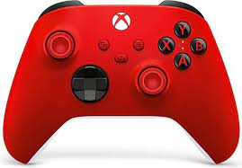
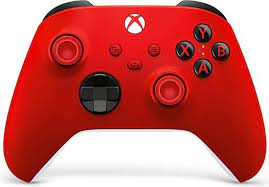
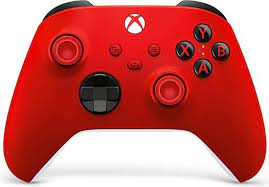
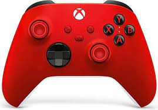
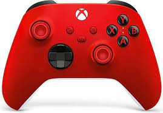

Ik ben 12 jaar oud en geboren op 06-10-2010.
Ik heb 1 zus en beide ouders.
Mijn hobbies zijn gamen, basketballen en carspotten.
Mijn lievelingseten is pizza.
Mijn favoriete kleur is rood.  versie 1.0 Home Over mij
 
versie 1.0

versie 1.0

versie 1.0

versie 1.0